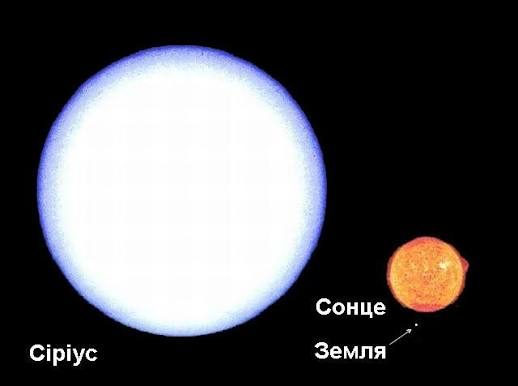
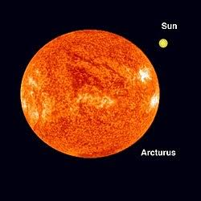
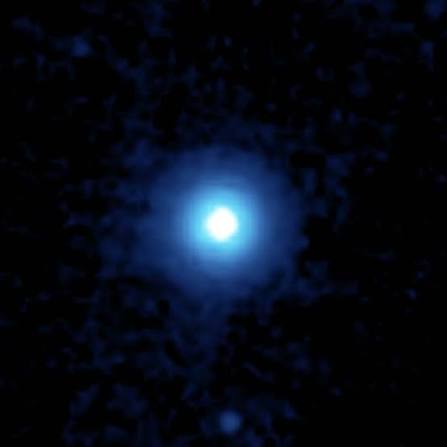
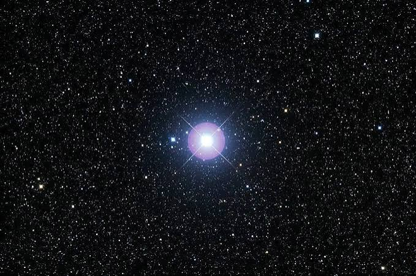
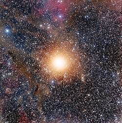

Дивлячись на нічне небо, ми бачимо тисячі світлич крапок, але не багато з них сяють настільки яскраво, що їх можна побачити в освітленних вулицях. На цьому сайті можна побачити найяскравіші зорі, які видно із Землі.
Яскравість зірок астрономи вимірюють за допомогою видимої зоряної величини - чим менше це число, тим яскравіша зірка.
Найяскравішою зіркою нічного неба (не рахуючи Сонця) є Сірiус - вона розташована у сузір'ї Великого Пса. Друге місце займає Канопус, а третє - Альфа Центаврі, найближча до нас зоряна система.

| № | Зірка | Видима зоряна величина | Відстань (св. роки) | Спектральний клас |
|---|---|---|---|---|
| 1 | Сіріус | -1,46 | 8,6 | A |
| 2 | Канопус | -0,74 | 310 | A |
| 3 | Альфа Центаврі | -0,27 | 4,34 | G |
| 4 | Арктур | -0,05 | 36,7 | K |
| 5 | Вега | 0,03 | 25 | A |
| 6 | Капелла | 0,08 | 42,2 | K |
| 7 | Рігель | 0,13 | 860 | B |
| 8 | Проціон | 0,38 | 11,4 | F |
| 9 | Ахернар | 0,46 | 139 | B |
| 10 | Бетельгейзе | 0,50 | 550 | M |
Детальніше про список можна почитати на Вікіпедії



